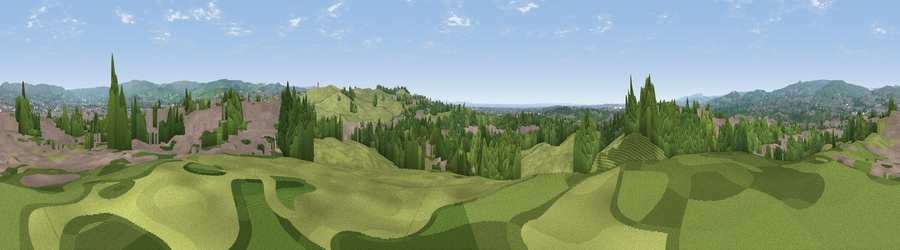

Viewpoint near Castleton
#32677 in England · top 75% of its area beats it · near Castleton · access?Where it is
The exact computed spot (SD 89475 10575). Click the marker for map links.
Public access: no public right of way or access land is recorded at this exact spot — it may be on private land. Computed from Natural England's CRoW access layer and OpenStreetMap rights of way — not the legal definitive map. Always verify locally.
The view, rendered

A 360° render of this exact spot computed from the terrain model, tree cover and land cover — summer colours, afternoon light, calibrated against photographs of famous viewpoints. Real trees, hedges and buildings will differ in detail.
The panorama
Grey silhouette: terrain skyline in each direction (720 bearings, Earth curvature and refraction included). Dashed green: skyline with trees (+15 m) and buildings (+8 m) as obstacles. Blue strip: how far the ground is visible on each bearing.
Where the view opens
Wedge length = distance to the farthest visible ground on that bearing (vegetation-aware). Rings at 10, 25 and 50 km.
What fills the view
37% woodland · 36% grassland · 26% built-up
Angular shares of the visible panorama (visual magnitude), not map area. Landscape diversity 0.49 (0–1 Shannon).
Key numbers
More beautiful places nearby
The staircase of upgrades: each row has a higher view potential than everything closer. Driving times are estimates from straight-line distance, calibrated against real road routing — check an actual route before setting out.
| Place | Direction | Drive | Score |
|---|---|---|---|
| Viewpoint near Thornham | SE · 1 km | ~4 min | 60.6 |
| Tandle Hill | SSE · 2 km | ~5 min | 64.2 |
| Viewpoint near Shaw | E · 6 km | ~13 min | 68.4 |
| Viewpoint near Shaw | ESE · 6 km | ~13 min | 68.5 |
| Viewpoint near Denshaw | E · 6 km | ~14 min | 69.3 |
| Viewpoint near Shaw | ESE · 7 km | ~14 min | 72.9 |
| Viewpoint near Edenfield | NW · 11 km | ~21 min | 77.5 |
| White Brow | W · 23 km | ~38 min | 82.9 |
53.59165, -2.16048 · source: screening · position refined by local search. Computed location — check access rights before visiting.